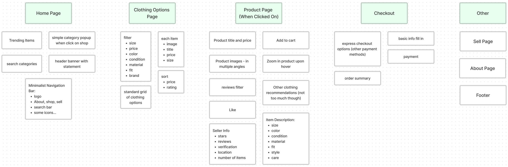
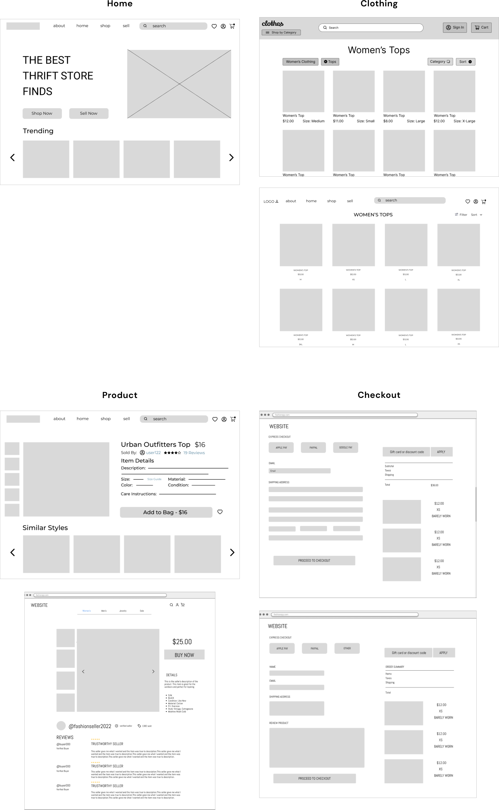

User Personas
Now that we've completed user and market research, we can finally bring the targeted audience for Bloom to life! These user personas represent the general wants and needs of an online clothing shopping experience.


Bloom is an online secondhand clothing store that seeks to modernize the thrifting experience to revolutionize and promote sustainable shopping. This project was created during Portfolio 101 by Creative Tech Design Club @ UCSC, led by our president Yukti Malhan.
Today, e-commerce dominates and shapes the way individuals shop for items, and clothes are especially commonly shopped for online. However, the experience of online shopping can get quite complicated. From the difficulty of finding desired products, to multistep processes of making a purchase, there are plenty of opportunities to simplify the online shopping experience and make it easier, quicker, and simpler.
Bloom, a minimally designed secondhand clothing website, makes it simple to find what a user is looking for, to get the information they require without being overwhelmed, and check out without too many steps.
To start our project off, we surveyed potential users to attain a better understanding of a typical demographic that commonly shops for clothing online, and any shortcomings they experience while doing so.
From our survey responses, we observed patterns amongst user shopping experiences which gave us an increased understanding of users' frustrations and needs while online shopping.
We then explored existing online clothing stores to understand potential advantages and disadvantages of them.
We identified various common features of online clothing stores, such as similar products, categories, and filters. While the stores often followed a similar appearance standard, the sites did differ in the extent of personalization for customers, as well as layout and display.
Now that we've completed user and market research, we can finally bring the targeted audience for Bloom to life! These user personas represent the general wants and needs of an online clothing shopping experience.
Based on our user and market research, we identified what users require in a good shopping experience. Using these insights, we brainstormed the components and features of Bloom.
Onto the actual designing! We individually designed low fidelity wireframes for 4 key sections of the website: Home, Clothing, Product, and Checkout. We then grouped together to evaluate and iterate upon these individual designs.

After individually designing, we grouped together and evaluated the designs, and selected which ones we wanted to use to move forward onto high fidelity designing. These designs include most of the key structures and components of Bloom.
We collectively decided that our lofis needed some adjustments and improvements as we create the high fidelity versions of them, and proceeded to iterate upon those designs. We also added some other pages and parts that we thought were necessary for the site.
• more categories: recommended for you, popular sellers
• navigation bar: logo, about, shop, sell, search, icons
• dropdown when clicking "shop" to reveal categories
• separate "sort by" and "filter" buttons
• filter options for: size, price, condition, material, fit, brand
• display image, name, price, size for each product
• include basic information: product name, price, some seller info, and product description, details
• "add to cart" button instead of "buy now"
• seller info (name, # sold, active status, rating) and reviews at bottom
• include information about product consistent to other pages
• place product info on left and billing info on right
Here is our final product, a fully designed and prototyped Bloom!
Bloom was my first ever completed UX project. As such, it was an incredible learning experience where I explored the UX process and improved on my design skills. I also got to experience working on a project with a team, having previously only designed by myself or with 1-2 others. I experienced balancing team dynamics, managing roles, evaluating each others' work, and gaining insights from other designers' perspectives.
Thanks to Yukti for organizing CTD Portfolio 101 and leading us through this project!
Bloom is most definitely not complete! I would like to conduct a usability test or multiple to gain authentic feedback from users and see how Bloom can be improved. In addition, there are several different pages and components of the website that I want to add and expand upon to deliver to a wider audience. And, I will continually brainstorm and iterate on the designs to simplify users' shopping experience further.